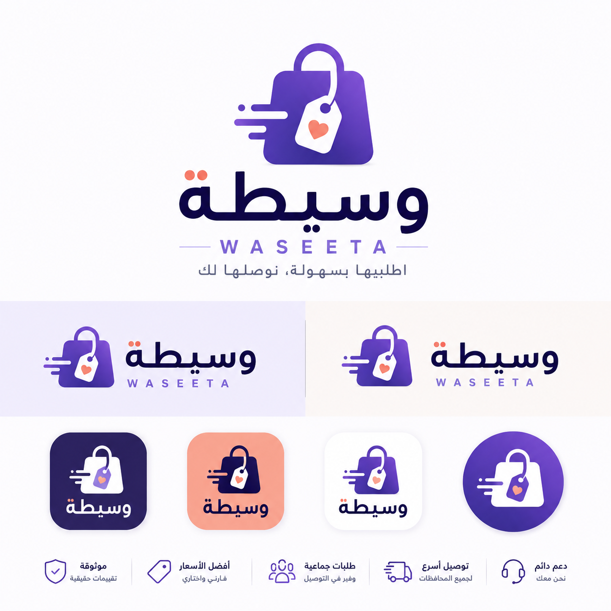
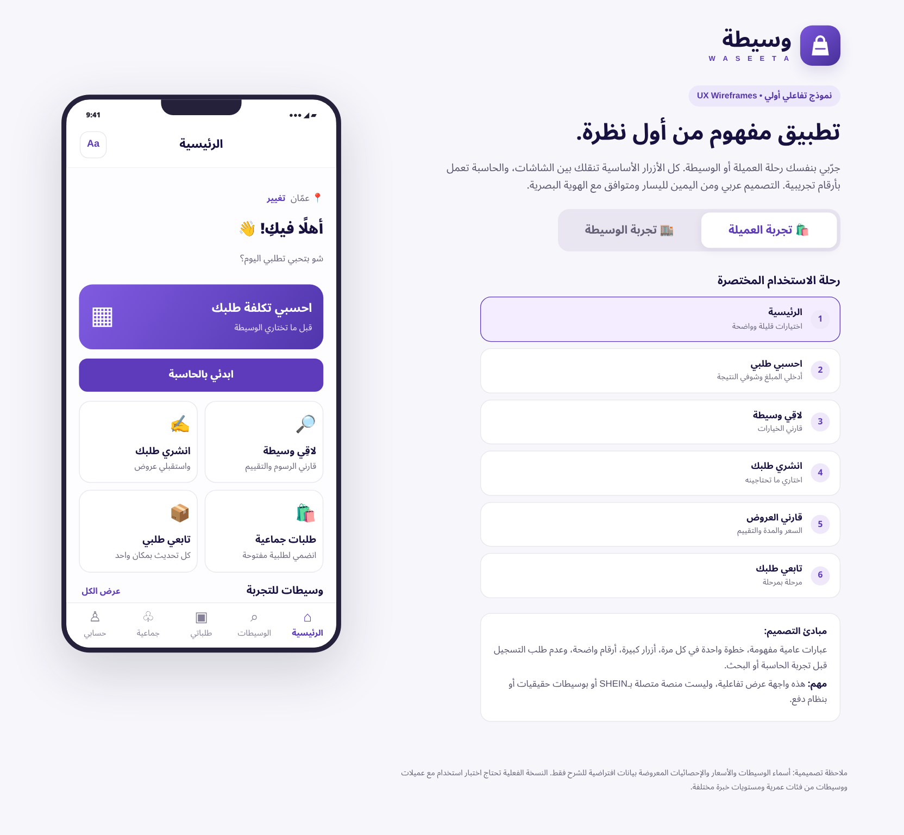
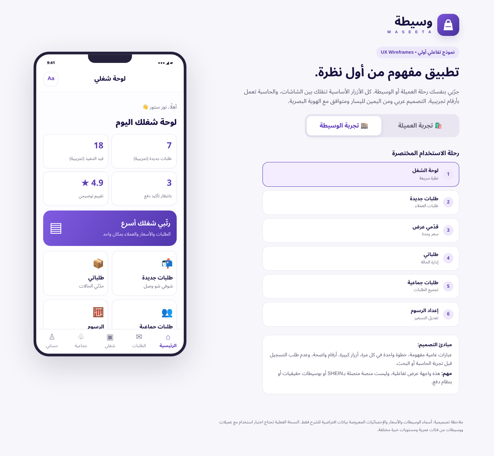

Cost estimator
Customers enter order information and see an estimated cost breakdown rather than relying only on chat messages.
A Jordan-focused marketplace concept designed to make ordering through shopping mediators clearer and more organized for both customers and mediators.


Many shoppers in Jordan place SHEIN orders through intermediaries. The process can involve direct messages, unclear price calculations, comparing fees and following up on order progress. Mediators also need a more structured way to organize customers and requests.
Waseeta is my proposed solution: a space where customers can calculate an approximate total, review mediators, create an order request and follow its status, while mediators have business tools for organizing requests and offers.
Customers enter order information and see an estimated cost breakdown rather than relying only on chat messages.
The planned customer flow helps people browse and compare mediator options and terms.
A structured request flow replaces scattered message threads and can allow mediators to respond with offers.
The customer-facing concept includes updates on the progress of an order.
Business-side workflows cover customers, requests, quotations, order records and delivery fees.
Mediator subscriptions are part of the proposed revenue model, alongside value-added operational tools.
Customer checks discovery options and starts an order estimate.
The calculator presents a simulated cost breakdown.
Customer creates a sample request and compares illustrative mediator offers.
Mediator-side screens demonstrate records, group orders and fee settings.
The original HTML prototype contains clickable customer and mediator screens; its information and transactions are simulated and it does not submit real orders.
These images are captures from the original working HTML wireframe prototype — the customer and mediator experiences.

Initial product planning keeps the experience usable without depending on an unofficial SHEIN API. Pricing is an estimate rather than a guaranteed live SHEIN quote. The platform is not presented as an official SHEIN partner, and the concept does not require holding customer funds itself.
See other built projects and product concepts.